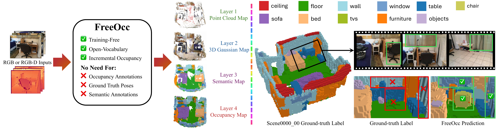
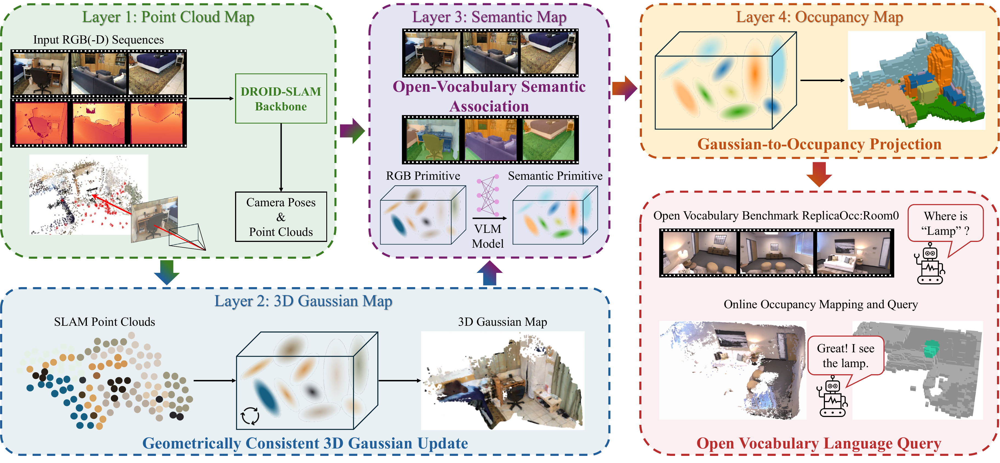
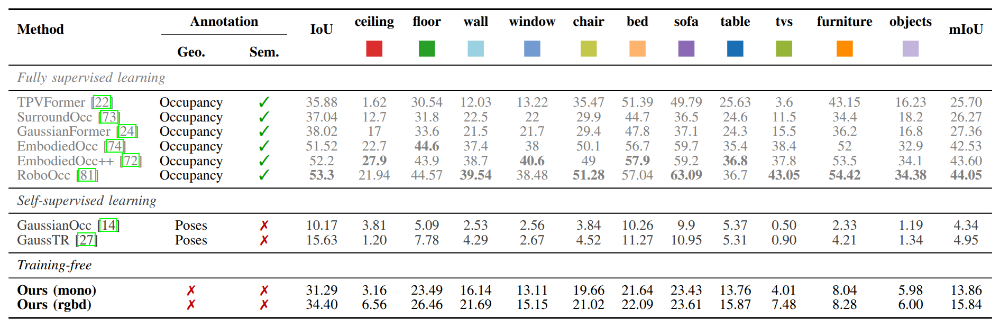
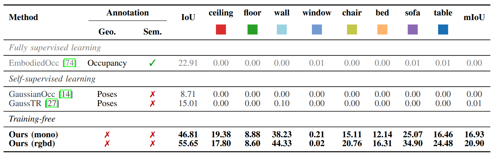
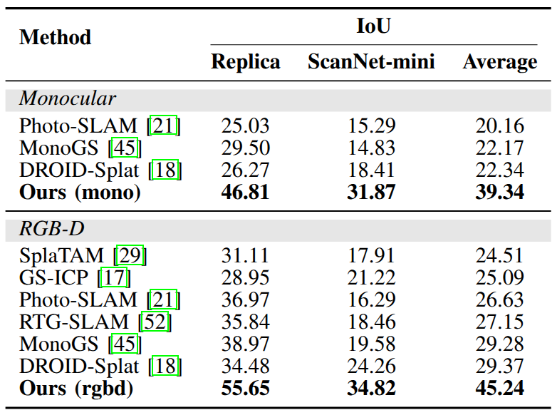
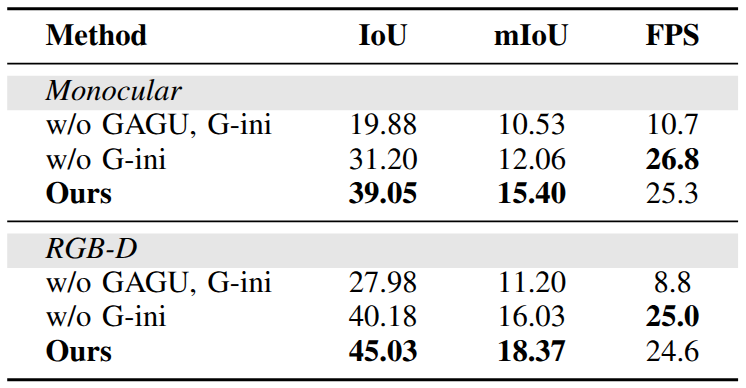

Existing learning-based occupancy prediction methods rely on large-scale 3D annotations and generalize poorly across environments. We present FreeOcc, a training-free framework for open-vocabulary occupancy prediction from monocular or RGB-D sequences. Unlike prior approaches that require voxel-level supervision and ground-truth camera poses, FreeOcc operates without 3D annotations, pose ground truth, or any learning stage. FreeOcc incrementally builds a globally consistent occupancy map via a four-layer pipeline: a SLAM backbone estimates poses and sparse geometry; a geometrically consistent Gaussian update constructs dense 3D Gaussian maps; open-vocabulary semantics from off-the-shelf vision-language models are associated with Gaussian primitives; and a probabilistic Gaussian-to-occupancy projection produces dense voxel occupancy. Despite being entirely training-free and pose-agnostic, FreeOcc achieves over 2x improvements in IoU and mIoU on EmbodiedOcc-ScanNet compared to prior self-supervised methods. We further introduce ReplicaOcc, a benchmark for indoor open-vocabulary occupancy prediction, and show that FreeOcc transfers zero-shot to novel environments, substantially outperforming both supervised and self-supervised baselines.
Main Paper

Methodology
FreeOcc builds a four-layer representation for online open-vocabulary occupancy prediction.

Quantitative Results




Qualitative Results